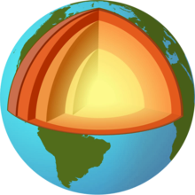

Земя
 Земята е третата планета в Слънчевата система. Тя е най-голямата от земеподобните планети в тази система и единствената, на която според съвременните научни схващания
има живот. Земята е формирана преди около 4,54 милиарда години и скоро след това придобива единствения си естествен спътник – Луната. От всички животински видове, които са се развили на Земята, човекът (Homo sapiens) е единственият, който
е развил интелигентност. Астрономическият символ на Земята е окръжност с кръст, представляващ един меридиан и екватора. Външната обвивка на Земята е разделена на няколко твърди сегмента или тектонски плочи, които постепенно мигрират под повърхността
през периоди от милиони години. Около 71% от повърхността е покрита от соленоводни океани, а останалото са континентите, островите, реките и езерата. Земята е единствената планета в Слънчевата система, на която е открита вода в течно състояние.
Вътрешността на Земята остава активна, с тънък слой земна мантия, течно външно ядро, генериращо магнитно поле и твърдо вътрешно ядро.
Земята е третата планета в Слънчевата система. Тя е най-голямата от земеподобните планети в тази система и единствената, на която според съвременните научни схващания
има живот. Земята е формирана преди около 4,54 милиарда години и скоро след това придобива единствения си естествен спътник – Луната. От всички животински видове, които са се развили на Земята, човекът (Homo sapiens) е единственият, който
е развил интелигентност. Астрономическият символ на Земята е окръжност с кръст, представляващ един меридиан и екватора. Външната обвивка на Земята е разделена на няколко твърди сегмента или тектонски плочи, които постепенно мигрират под повърхността
през периоди от милиони години. Около 71% от повърхността е покрита от соленоводни океани, а останалото са континентите, островите, реките и езерата. Земята е единствената планета в Слънчевата система, на която е открита вода в течно състояние.
Вътрешността на Земята остава активна, с тънък слой земна мантия, течно външно ядро, генериращо магнитно поле и твърдо вътрешно ядро.
История
Според най-разпространените и приети теории Земята се формира преди 4,5 милиарда години заедно с другите планети на Слънчевата система, поради акреция от оригиналната слънчева мъглявина. Няколко милиона години след това, една малка протопланета, Тея, се сблъсква със Земята; след този гигантски сблъсък се формира единственият естествен спътник на Земята: Луната. След като земната повърхност се е изстудила, се появява водата, най-вероятно премесена от многобройни метеорити и комети, и се създават първите океани. В тази първична водна среда се появяват първите органични молекули и след това първите едноклетъчни организми.
В течение на повече от три милиарда години животът се развива бавно, но неудържимо, променяйки земната среда; фотосинтетичните живи същества обогатяват атмосферата с кислород и се появяват многоклетъчните организми. След това се появяват гръбначните живи форми. Бързо се развиват рибите и от тях първите земноводни животни, които се прехвърлят и на сушата. От тези първи организми, които могат да дишат въздуха, се развиват влечугите, между които динозаврите завладяват Земята са стотици милиона години. В течение на този период се развиват и първите бозайници, които започват да завладяват земната среда след изчезването на динозаврите поради импакта на Земята с голям астероид. Няколко десетки милиона години след това в Африка се разиват особени бозайници: приматите. От тях преди няколко години се развиват човекоподобните и след това нашият вид: човекът (Homo Sapiens).
Физически характеристики
Форма
Формата на Земята се нарича геоид. Земята е огромно скално кълбо, което се върти в пространството около оста си, но това кълбо не е правилно, тъй като Земята е сплескана откъм полюсите и повърхността ѝ е релефна. Земята е най-голямата от четирите слънчеви планети от земен тип по отношение на размер и маса. От тези четири планети (Меркурий, Венера, Земята и Марс), Земята има най-висока плътност, най-висока гравитация по повърхността, най-силно магнитно поле, и най-бързо въртене. Тя е планета с активни тектонични плочи.
Въртенето на планетата създава екваториалната изпъкналост, затова диаметърът на екватора е с 43 km по-голям от този на полюсите. Средният диаметър на планетата е около 12 742 km, което е около 40 000 km/π, като метърът като мерна единица първоначално е дефиниран като 1/10 000 000 от разстоянието от екватора до Северния полюс през Париж, Франция. Най-големите точки с отклонения на повърхността на Земята са връх Еверест (8848 m над морското равнище) и Марианската падина (11 022 m под морското равнище). Поради издуването на Земята към екватора, най-отдалечената от центъра на Земята точка е всъщност връх Чимборасо в Еквадор (6384,4 km).
Вътрешност
Във вътрешността на Земята температурата достига до 5270 K. Топлината във вътрешността на планетата е била отделена при първоначалното натрупване на материал при формирането ѝ. (вижте Гравитационна свързваща енергия) След това допълнителна топлина се отделя чрез радиоактивното разпадане на елементи като уран, торий и калий. Топлината от вътрешността на Земята, която достига до повърхността ѝ, е едва 1/20 000 от енергията, получена от Слънцето. Кората е отделена от мантията от границата на Мохоровичич; дебелината на кората варира от 6 km под океаните, до 30 – 50 km под континентите.
Ядро
Средната плътност на Земята е 5515 kg/m³, което я прави най-плътната планета в Слънчевата система. Плътността на повърхностния материал е около 3000 kg/m³, което сочи, че вътрешността е богата на тежки елементи. Непосредствено след формирането си преди около 4,54 млрд. години Земята е била почти изцяло разтопена, и в резултат на това под действието на гравитацията тежките елементи са потънали към центъра, докато по-леките са „изплували“ на повърхността. В резултат на това ядрото се състои почти изцяло от желязо (80%), никел и силиций. Други тежки елементи като олово и уран са или твърде редки, или имат тенденцията да се свързват химически с леки елементи и по този начин да останат в кората. Ядрото е разделено на две части – твърдо вътрешно ядро с радиус около 1250 km и течно външно ядро, което обхваща вътрешното и има радиус около 3500 km. Смята се, че вътрешното ядро е твърдо заради огромното налягане, под което се намира. Някои учени считат, че то може би представлява един гигантски железен кристал. Външното ядро се състои от течно желязо и течен никел с примеси от леки елементи. Смята се, че конвекцията във външното ядро заедно с ефекта на Кориолис пораждат магнитното поле на Земята чрез процес, известен като теория на динамото. Вътрешното ядро е твърде горещо, за да задържа постоянно магнитно поле (Виж Температура на Кюри), но вероятно стабилизира магнитното поле на външното ядро. По последни данни вътрешното ядро на Земята се върти малко по-бързо от останалата част на планетата – с около 2° за година.
Мантия
Земната мантия достига до 2890 km дълбочина, което я прави най-дебелият слой в структурата на планетата. Налягането в най-дълбоките ѝ части е около 1,4 милиона атмосфери (140 GPa). Тя се състои главно от силикатни скали, относително богати на елементи като желязо и магнезий, в сравнение със земната кора. Макар че мантията е твърда, високите температури в нея правят силикатите достатъчно деформируеми, за да пълзят в рамките на продължителни периоди от време. Конвекцията в мантията се проявява на повърхността чрез движенията на тектоничните плочи. Температурата на топене и вискозитетът на веществата зависят от налягането, на което са подложени. Тъй като налягането в мантията нараства в дълбочина, по-ниските части пълзят по-лесно от по-горните пластове, като за това принос имат и разликите по дълбочина в химичния състав. Вискозитетът на мантията варира между 1021 и 1024 Pa.s, в зависимост от дълбочината.
Кора
Кората е дебела от 6 до 80 km. Най-тънките ѝ части са океанска кора, която се състои от гъсти желязно-магнезиеви силикати. Континенталната кора е по-дебела, по-лека е от океанската и е съставена от натриеви, калиеви и алуминиеви силикати. Границата между кората и мантията се проявява като рязка промяна на скоростта на разпространението на сеизмичните вълни – ефект, известен под името граница на Мохоровичич. Смята се, че най-общо причината за ефекта е промяната на химичния състав на скалите. Материал от вътрешността на Земята постоянно изригва на повърхността посредством вулкани и разломи по дъното на океаните, като става част от кората. По-голямата ѝ част е по-млада от 100 млн. години, но най-старите ѝ части са на 4,4 млрд. години.
Биосфера
 Земята е единственото място, където със сигурност се знае, че има живот. Живите организми на Земята образуват биосферата, за която се счита, че е започнала да съществува със зараждането на първите организми преди около 3,5 млрд. години. Биосферата е разделена на биоми (екосистеми), съставени от сродни растения и животни. Сухоземните биоми са разграничени един от друг предимно по географска ширина. Биомите на Арктика и Антарктика като цяло са бедни на растения и животни, докато най-богатите биоми са тези, разположени близо до екватора.
Атмосфера
Земята има сравнително гъста атмосфера, съставена от 78% азот, 21% кислород, 1% аргон и примеси от други газове като например въглероден диоксид и водна пара. Атмосферата играе ролята на топлинен буфер между Земята и Слънцето. Газовото съдържание на атмосферата е нестабилно и се поддържа от биосферата. Изобилието на молекулен кислород се поддържа от растенията, които използват слънчевата енергия. Без тях цялото количество кислород с времето би реагирало с елементите на повърхността. Наличието на свободен кислород в атмосферата е доказателство за протичането на жизнени процеси. Височината, на която се намират атмосферните слоеве тропосфера, стратосфера, мезосфера, термосфера и екзосфера, варира в зависимост от географската ширина и от сезоните. Общата маса на атмосферата е около 5,1×1018 kg или около 0,9 милионни части от общата маса на Земята.
Хидросфера
Земята е единствената планета в Слънчевата система, на която има вода в течно агрегатно състояние. Тя покрива 71% от повърхността на Земята (97,5% от водата е солена и 2,5% – сладководна).[15] Около 67,8% от прясната вода се намира във формата на лед в ледниците.[16] На земната повърхност в епохата, която живеем сега, са обособени четири океана и седем континента. Земната орбита, вулканичната дейност, гравитация, парников ефект, магнитно поле и богата на кислород атмосфера заедно създават подходящи условия за съществуването на вода в три агрегатни състояния на земната повърхност. Земята се намира на такова разстояние от Слънцето, че при отсъствието на естествен парников ефект (създаван главно от водни пари и въглероден диоксид), температурата на повърхността на планетата би била под 0 °C и всичката вода би замръзнала. Палеонтологични доказателства сочат, че преди милиарди години е имало период, в който естественият парников ефект на Земята е бил нарушен и океаните са били напълно замръзнали за период от 10 до 100 млн. години.
На други планети, като Венера например, водните пари в атмосферата са разрушени от слънчевата ултравиолетова радиация, поради което водородът е постоянно йонизиран и отнасян в междупланетното пространство от слънчевия вятър. Този ефект е бавен, но необратим, и с негова помощ учените обясняват липсата на вода на Венера. При отсъствието на водород кислородът реагира с повърхностния материал на планетата. Високо в земната стратосфера тънкият слой озон поглъща почти изцяло ултравиолетовата радиация, идваща от Слънцето, като по този начин значително намалява йонизиращия ефект на радиацията върху водните пари. Озонът може да бъде получен само при наличието на свободен кислород в атмосферата и следователно е зависим от биосферата. Магнитното поле на Земята също помага, като блокира голяма част от слънчевия вятър (Виж йоносфера). Вулканичните изригвания допринасят за освобождаването на допълнителни количества водна пара и въглероден диоксид в атмосферата.[17] Земната тектоника позволява водата и въглеродният диоксид в атмосферата да се рециклират обратно в мантията под формата на скали като варовик. Според съвременни изчисления цялото количество вода, което се съдържа в мантията, е около 10 пъти по-голямо от водата в световните океани. Общата маса на хидросферата (вода на повърхността на Земята) се изчислява на 1,4×1021 kg или 0,023% от общата маса на Земята.
Магнитно поле
Земното магнитно поле има приблизителна форма на магнитен дипол, като магнитните полюси приблизително се намират до географските полюси на планетата. Според магнитната теория полето се създава от външната част на разтопеното ядро, където топлината създава движение на веществата в ядрото и се генерират електрични потоци. От това се създава магнитното поле на Земята. Тези движения в ядрото са хаотични и периодично се подреждат. Това поражда обръщане на земното магнитно поле през неравни интервали от време, понякога от няколко пъти на милион години. Последното обръщане на полюсите на магнитното поле се е случило преди около 700 000 години. Полето създава магнитосфера, която отклонява частиците на слънчевия вятър. Сблъсъкът между магнитното поле и слънчевия вятър формира радиационния пояс на Ван Алън. Когато плазма навлезе в земната атмосфера, над поясите се образува полярното сияние.
Земята в Слънчевата система
На Земята са необходими 23 часа, 56 минути и 4,09 секунди (или един звезден ден), за да извърши едно пълно завъртане около собствената си ос, която минава през Северния и Южния полюс. Наблюдавани от повърхността на Земята, видимата позиция на небесните тела (без метеорите и изкуствените спътници) се премества с 15° на запад всеки час или приблизително с един видим диаметър на Слънцето или Луната на всеки две минути. Земната орбита е елиптична с ексцентрицитет 0,016710219 и голяма полуос 149 597 887,5 km. Средната скорост на движение около Слънцето е 29,765 km/s, като варира между 30,27 km/s (в перигея) до 29,27 km/s (в апогея). С тази скорост тя изминава разстояние, равно на един свой диаметър, за приблизително 7 минути. Една пълна обиколка земята извършва за 365,2564 дни (една слънчева година). Видимата позиция на Слънцето спрямо звездите се премества приблизително с 1° на изток за един ден. Земята прави една обиколка около оста си за 0,447 km/s (~1600 km/h), измерено на екватора. С приближаването към полюсите скоростта респективно намалява до нула.
Ако условно разделим Слънчевата система на „горна“ и „долна“ част, от които съответно са видими земният Северен или Южен полюс, и следим движението на Земята по нейната орбита „отгоре“, то движението на Земята (и всички останали планети, както и въртенето на всички планети, включително Слънцето, но без Венера) е по посока обратна на часовниковата стрелка. Плоскостите, определени от орбитата на Земята около Слънцето и нейното въртене около оста си, не са успоредни, а се пресичат под ъгъл от 23,5°. Този факт е главната причина за наличието на сезони, тъй като Северното и Южното полукълбо получават различно количество Слънчева енергия в зависимост от местоположението на Земята по нейната орбита. Второстепенна причина за наличието на сезони е ексцентричността на орбитата на Земята. Когато в Северното полукълбо е лято (и зима в Южното), разстоянието от Земята до Слънцето е по-голямо, отколкото разстоянието през зимата в Северното полукълбо (лято в Южното полукълбо) и съответно Земята получава по-голямо количество енергия. Този факт води до известно смекчаване на климата в Северното полукълбо. Оста на въртене на Земята е подложена на прецесия с период от 25 800 години и нутация с период от 18,6 години. Тези движения са породени от сфероидната форма на Земята и ефектите, които оказват Слънцето и Луната.I
Наблюдение от космоса
Земята е фотографирана от космоса за първи път през 1959 г. от Explorer 6. През 1961 Юрий Гагарин става първият човек, който наблюдава Земята от космоса. Екипажът на Аполо 8 е първият, който наблюдава изгрев на Земята от лунна орбита през 1968 г. През 1972 г. екипажът на Аполо 17 прави известната фотография „Синьото топче“ на планетата Земя.
Естествени спътници
Земята има един сравнително голям естествен спътник – Луната, която прави една пълна обиколка около Земята за 27,3 дни. Наблюдавана от повърхността на Земята, Луната се придвижва спрямо звездите със скорост 12 градуса (или един лунен диаметър) на час в посока изток. Луната се отдалечава от Земята със скорост 4 cm на година.
Лунната гравитация е причината за приливите на Земята. Луната винаги показва една и съща страна по посока на Земята, но с различни осветени части. Луната вероятно е повлияла благоприятно върху факторите за развитието на живота на Земята. Тя стабилизира земната ос и някои учени считат, че без нея наклонът ѝ би се изменял хаотично като този на Марс. В случай че земната ос стане успоредна на еклиптиката, то земният климат би се променил значително и най-вероятно би станал твърде неблагосклонен. Някои учени-планетолози считат, че този ефект би довел до изчезването на голям брой видове висши животни и растения.
География
Повърхността на Земята (510,073 млн. km²) главно се разделя на континенти, океани. 70,8% от нея (361,132 млн. km²) е вода, а 29,2% (148,94 млн. km²) – суша. Бреговите линии са 356 000 km. Континенталният шелф е с дълбочина между 140 до 550 m и ширина между 0 и 150 km.
Екстремални точки (спрямо морското равнище)
Най-ниска точка на повърхността: Мъртво море −392 m
Най-голяма дълбочина: Марианска падина в Тихия океан −11 022 m
Най-висока точка: Еверест 8848 m
Природни и климатични пояси
Земята се разделя на седем вида биологични и климатични пояси. По-общо земният климат са характерни две обширни полярни зони, разделени от две сравнително тесни умерени зони, две тропични зони и една широка екваториална зона. Валежите варират в широки граници – от няколко метра до по-малко от милиметър годишно. Всички промени на времето стават в първите 10 km от атмосферата. Около една десета от Земята винаги е покрита с лед, а около една пета от сушата е пустиня.
Природа
Природни ресурси
Земната кора съдържа голямо количество залежи на изкопаеми горива като въглища и нефт, природен газ и метан. Човечеството използва тези ресурси за производство на енергия и като суровина за разнообразни химични продукти.
Метални руди:
те са се формирали под въздействието на ерозията и тектоничната активност на Земята.
Земната биосфера произвежда много биологични продукти като храна, дървета, лекарствени средства, кислород, а също така рециклира много органични отпадъци.
Някои от природните ресурси като изкопаемите горива не могат да бъдат възстановени бързо по естествен път и поради това се наричат невъзобновяеми. Експлоатацията на невъзобновяемите ресурси от човешката цивилизация е плод на ожесточени
дискусии между природозащитници и технократи.
Естествени бедствия
Обширни площи на Земята са подложени на природни бедствия като тропически циклони и антициклони, урагани (в Атлантическия океан) или тайфуни (в Тихия и Индийския океан. Много населени места са също подложени на опасности от земетресения, свлачища, вулканични изригвания, торнадота, пропадания на земна маса, наводнения или засушавания. Много области и територии са обект на замърсяване на въздуха и водата от антропогенната дейност на човека, киселинни дъждове, загуба на естествената растителност (в резултат от занемаряване на земята, застрояване и урбанизиране), намаляване на видовото разнообразие, ерозия и изчерване на почвите. Хората са причината и за глобалното затопляне, вследствие на емисиите въглероден диоксид. Това води до промени, като топенето на ледниците и снежните покривки, екстремално повишение на температурите, чувствuтелни промени в състоянието на водите и глобално повишение на нивото на водата.u
Проблеми на антропогенния фактор
В много области на Земята са наблюдава пренаселване, индустриални аварии, които водят до замърсяване на околната среда, киселинни дъждове, токсични отпадъци, загуба на растителност заради пасища, обезлесяване, запустяване, загуба на естествени животински и растителни видове, влошаване на плодородието на почвите или тяхната пълна или частична ерозия. В дългосрочен план климатът на Земята е подложен на глобално затопляне поради изпускането на парникови газове като въглероден диоксид вследствие на индустриалната активност на човечеството. Друг вид газове като фреоните са причинители на частичното разрушаване на озоновия слой на атмосферата над Арктика и Антарктика.
Човешко население
Населението на Земята надхвърля 7 млрд. жители на 31 октомври 2011 г. Прогнозите сочат, че населението на Земята ще достигне 9,2 млрд. през 2050 г. По-голяма част от населението ще се увеличи в развиващите се държави. Гъстотата в различните региони по света варира, но голяма част е концентрирана в Азия. През 2020 г. се очаква 60% от хората да живеят в градовете. Изчислено е, че само 1/8 от територията на Земята е подходяща за живот, 3/4 е заета от световния океан, а половината от сушата е пустиня или друг вид суша, която не е подходяща за живеене.
Най-северното селище в света е Алерт, остров Елсмер в Канада, а най-южното – базата Амундсен-Скот на Южния полюс. Първият човек, летял в орбита около Земята, е Юрий Гагарин(на 12 април 1961 г.) Общо 487 души за излизали извън земната атмосфера към 30 юли 2010 г., от които дванадесет са стъпили на Луната. В момента Международната космическа станция е единствената конструкция, която приютява хора в космоса. Екипажът на станцията е съставен от 6 члена и се сменя на всеки шест месеца.[35] Хора са се отделечавали максимално на 400 171 km от Земята по време на мисията Аполо 13 през 1970 г.